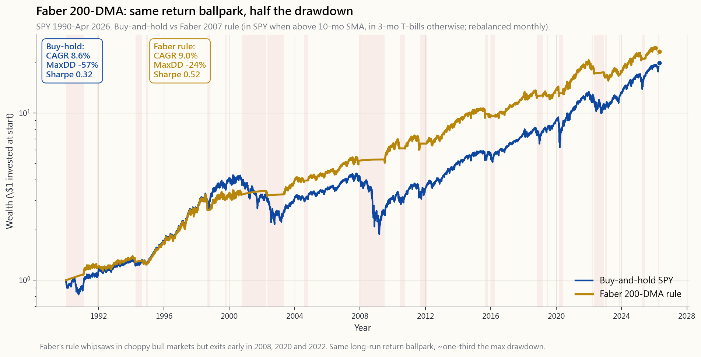
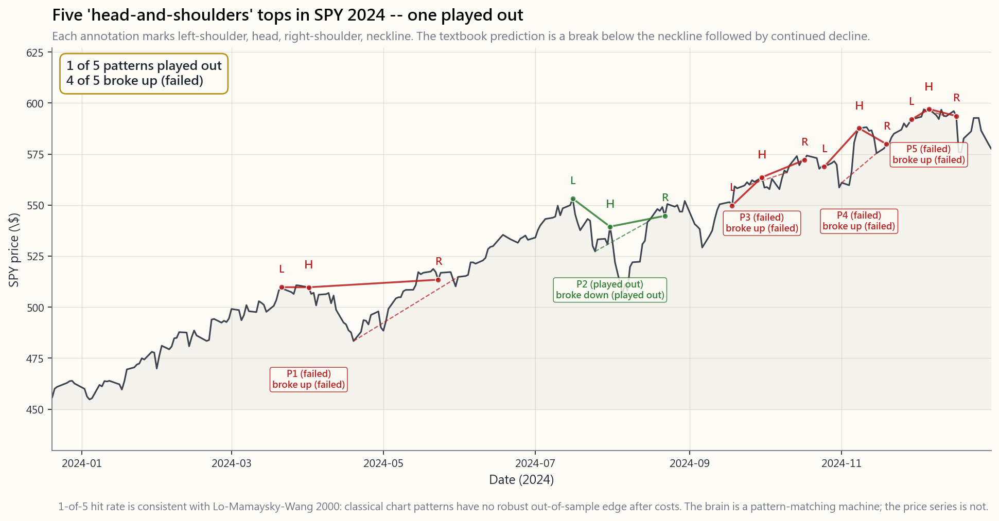

Side Lesson 23: Technical Analysis — What Works (Some), What Doesn't (Most), and the Academic Verdict
1. Why This Is Important
Technical analysis is the largest cottage industry in finance. There are tens of thousands of books, hundreds of indicators with three-letter acronyms, dozens of YouTube channels selling pattern-recognition courses, and a small army of CMTs (Chartered Market Technicians) whose certification body has been around since 1973. Against all this, the academic literature has been remarkably consistent for forty years: most of it doesn't work, two narrow pieces of it do. Side 23 is the honest survey of which is which.
pattern-fitting.** Andrew Lo, Jegadeesh, Pedersen, Bessembinder and others have run rigorous tests on the universe of "classical" chart patterns — head-and-shoulders, double tops, triangles, pennants, flags — and the result is consistent: after transaction costs, no systematic edge. The patterns are visible after the fact because the brain is a pattern-matching machine. They are not predictive in advance.
momentum (the past 12 months of a security's own returns predicts the next 1-12 months) is documented in Moskowitz, Ooi and Pedersen 2012 across 58 markets and is the engine behind the $300B managed-futures industry (Week 51). The 200-day moving average as a risk-on / risk-off filter (Faber 2007) gives roughly the same long-run return as buy-and-hold but cuts the worst drawdowns roughly in half. These are not flashy. They are the exceptions, not the rule.
isn't.** A trader who says "I sell when the 50-day breaks the 200-day" has, at minimum, a rule — a pre-committed binary trigger that overrides loss aversion (Side 15). The trigger may have weak predictive power, but the discipline is real. The market can stay irrational longer than you can stay solvent. A bad rule consistently followed beats a good thesis abandoned in a panic.
guests will draw trendlines on screen. X / Twitter accounts will post "this triangle is breaking out." YouTube channels will sell you a course on Elliott Wave theory for $1,997. You need to be able to tell the difference between the 95% that is decoration and the 5% that is real, especially because the decorative kind tends to come dressed in the language of the real kind.
This lesson covers chart-pattern claims (the failures), the two TA strategies that replicate out-of-sample (the survivors), and the behavioural-discipline argument for using TA-style rules even when their predictive value is weak. The two anchors: alpha is rare, so the default should be passive; and momentum + mean-reversion + vol-on / vol-off are the only short-list of robust market regularities.

The interactive lab on the website lets you slide the moving-average window from 50 to 365 days and pick the risk-off asset (T-bills, gold, or 0%-cash) and see CAGR, vol, Sharpe and max drawdown vs buy-and-hold across the whole 1990-Apr 2026 sample.
2. What You Need to Know
2.1 What Technical Analysis Actually Claims
Technical analysis is the use of past price and volume data — and only past price and volume data — to predict future returns. The underlying claims are usually some combination of:
markets statement, oddly enough).
patterns of fear and greed produce the same chart shapes.
The first claim is identical to what passive indexers believe and implies you can't beat the market by any method. The second and third claims are testable empirical statements. They have been tested. The results are mixed at best.
The TA universe splits roughly into four buckets:
- Chart patterns — head-and-shoulders, double tops / bottoms,
- Indicators — RSI, MACD, stochastics, Bollinger Bands, ADX,
- Trend / momentum rules — moving-average crossovers, 12-month
- Esoteric — Elliott Waves, Gann angles, Fibonacci retracements,
The literature finds: bucket 3 has some real signal. Buckets 1, 2, and 4 do not, after costs.
2.2 The Failure: Chart Patterns and Indicators
The most rigorous chart-pattern study is Lo, Mamaysky and Wang (Foundations of Technical Analysis, Journal of Finance 2000). They wrote a kernel-regression algorithm to detect 10 classical patterns (head-and-shoulders, broadening tops, triangles, etc.) on US equities 1962-1996 — taking subjectivity out by formalising "what counts as a pattern" mathematically. Result: a few patterns showed weak statistical signals (head-and-shoulders had a non-zero difference of conditional vs unconditional return distributions), but the magnitudes were small and the differences disappeared after transaction costs. Subsequent out-of-sample tests (Bessembinder & Chan, Brock-Lakonishok-LeBaron extensions) found the weak signals didn't replicate post-1996.
Indicators have fared no better. Park & Irwin's 2007 survey of 95 academic studies on technical trading found that 56 reported positive results, 20 negative, 19 mixed — but the positive-result studies were heavily weighted toward FX and commodities pre-1990 (when frictions were huge and the signal was almost certainly cost- related), and the failure rate climbed sharply for post-1990 equity samples. By the 2010s, the consensus view was that classical indicators (RSI, MACD, stochastics) had no robust out-of-sample edge in liquid US equities.
Candlestick patterns — Marshall, Young & Rose 2006, then Horton 2009 — were tested on the full Japanese-defined set across US large- caps and showed no profits net of costs. The "doji means indecision" claim turns out to mean roughly the same thing as "a coin flip means indecision." It does, but it doesn't help you.

Elliott Waves and Fibonacci retracements have effectively zero academic support. The Elliott Wave principle requires you to identify the current "wave count" — but the methodology allows re-counting after any reversal, which means it cannot be falsified in real time. The Fibonacci retracement levels (38.2%, 50%, 61.8%) are tested in Bhattacharya & Kumar 2006 and others; result, in the authors' words: "no statistically significant predictive content."
2.3 The Survivor #1: Time-Series Momentum (Moskowitz-Ooi-Pedersen)
The first TA-adjacent finding that has replicated robustly across markets and decades is time-series momentum — the observation that *a security's own past 12-month return predicts the next 1-12 months of returns, on average, in the same direction*. Moskowitz, Ooi and Pedersen's 2012 paper Time Series Momentum tested 58 liquid futures markets (equity indexes, currencies, commodities, bonds) from 1985-2009 and found that buying assets up over the last 12 months and shorting assets down over the last 12 months produced a Sharpe ratio of roughly 1.0-1.2 at the diversified-portfolio level — far higher than the underlying assets in isolation.
This is the engine that drives the managed-futures / CTA industry (Week 51). DBMF, KMLM, FMF, AHLT all run some flavour of time-series trend on a diversified futures basket. The 2008 +13.1% and 2022 +20.5% returns of the SocGen CTA index were essentially the time- series momentum signal capturing extended trends in rates, FX and equities while everything else was selling off.
Time-series momentum is a TA strategy in the strict sense — the only input is past prices. But it is the opposite of "head-and-shoulders on a daily chart." It works on long horizons (3-12 months), across a diversified basket (not single stocks), with explicit rules (rank-by-12-month-return-and-rebalance-monthly), and almost certainly captures a behavioural under-reaction to information that takes time to be priced in. Momentum is one of the two robust market regularities. This is where it shows up.
2.4 The Survivor #2: The 200-Day Moving Average (Faber GTAA)
The second survivor is the **200-day moving average as a risk-on / risk-off filter**, popularised by Mebane Faber's 2007 SSRN paper A Quantitative Approach to Tactical Asset Allocation (the most- downloaded paper in SSRN history at one point).
The rule:
- At month-end, check whether SPY's price is above its 10-month
- If yes, hold SPY.
- If no, hold 3-month T-bills.
The result, on US large-caps 1990-Apr 2026 (the exact backtest in the image script for this lesson, using ^GSPC price-only AdjClose for the equity leg and 3-month T-bills via FRED DGS3MO when out):
- Buy-and-hold S&P 500: ~8.6% CAGR, max drawdown -57% (2009).
- Faber 200-DMA rule: ~9.0% CAGR, max drawdown -24%.
- Sharpe ratio: ~0.32 buy-hold vs ~0.52 Faber.
This is the only piece of "technical analysis" most academics will defend in print. It is robust across decades, across markets (it works on EAFE and EEM too), and across reasonable parameter choices (any MA window from 100 to 250 days gives similar results — the result is not parameter-fitted to "200" specifically).
What it does not do: produce excess return in a long bull market. From 2010-2019, buy-and-hold beat the 200-DMA rule by ~1.5 pp/yr because the rule sat in T-bills during the August 2011, August 2015, February 2016 and December 2018 false breaks. The rule pays for itself in the once-or-twice-per-decade event where it cuts a -55% into a -20%. Vol-tail-wags-dog is the framing. You're not paying for upside; you're paying to truncate the left tail.
2.5 Why It Works: The Behavioural Story
The cleanest behavioural explanation for both survivors is *under- reaction*. New information takes time to be priced in — partly because attention is limited (Hong & Stein 1999), partly because disposition-effect selling caps gains early (Frazzini 2006), partly because institutional flows are slow (rebalance lag, mandate constraints, mutual-fund cash buffers).
When information is being slowly priced in, prices trend. A stock that beat earnings two months ago is still being upgraded by sell- side analysts, still being added to growth-strategy mandates, still being chased by retail. A stock that missed earnings two months ago is still being downgraded, dropped, sold. Time-series momentum and the 200-DMA both ride that trend.
When the information is fully digested, prices stop trending — and mean-reversion takes over (the other robust market regularity). This is why the trend rules whipsaw in flat / choppy markets and shine in directional ones.
The contrast with chart patterns is instructive. A "double top" is a shape, not a flow. There is no behavioural story under it — no mechanism by which the visual symmetry of the high produces a predictive signal. The pattern catches the brain's eye; it does not catch institutional capital. That is why it doesn't replicate.
2.6 The Behavioural Use Case: TA as Discipline
Here is the honest case for TA even where its predictive value is weak.
A retail investor with no rules tends to do the following:
- Buy when the stock is ripping (recency / FOMO from Side 15).
- Hold when the stock is down 30%, hoping for a bounce (loss-
- Sell at the bottom when the news is darkest (capitulation, cf.
A retail investor who follows even a weak technical rule — "I sell when the 50-day breaks the 200-day, no exceptions; I buy back when the 50-day crosses back above" — does the following:
- Sells in the early innings of major drawdowns (the rule fires in
- Buys back partway through the recovery (June 2009, May 2020,
- Has zero discretion in the moment, which is the moment when
The technical rule may be only weakly predictive, but it is *binary and pre-committed* — the two things that defeat behavioural bias (Side 15 §2.5). A bad rule consistently followed beats a good discretionary thesis abandoned at the bottom. The market can stay irrational longer than you can stay solvent — the rule is your insurance against your own brain when both you and the market are tilted.
This is also why the tactical-allocation industry ($150B+ AUM in 200-DMA-style rules) has staying power despite the modest CAGR edge. Clients are buying the behaviour insurance, not the return enhancement.
2.7 The Honest Verdict
Putting the literature together:
| Bucket | Verdict | Notes |
|---|---|---|
| Time-series 12-mo momentum (futures basket) | Works | MOP 2012, Sharpe ~1.0 diversified, basis of $300B CTA industry |
| 200-DMA / 10-month MA risk-on/off | Works (modestly) | Faber 2007 — same return, half the max drawdown |
| Cross-sectional momentum (single stocks) | Works (academic) | Jegadeesh-Titman 1993; -45% crash 2009; -1 pp/yr decay since |
| Chart patterns (H&S, double tops, triangles) | No edge | Lo-Mamaysky-Wang 2000; replicated post-2000 |
| RSI / MACD / stochastics | No edge | Park-Irwin 2007 survey |
| Candlestick patterns | No edge | Marshall-Young-Rose 2006 |
| Elliott Waves / Gann / Fibonacci | No evidence | Unfalsifiable in real time |
| TA as discipline mechanism | Real value | Behavioural insurance — beats discretion in crisis |
If you are going to use technical analysis, use it for what works: trend-following on diversified baskets, 200-DMA on broad indexes, and as a rule-set to defeat your own behavioural biases. Skip the patterns and the indicator soup. They are decoration.
2.8 The Post-COVID Regime: Why the Vol Surface Beats the Chart at Size
One thing the rest of this lesson does not say loudly enough. Classical technical analysis — every chart pattern, every indicator in the textbook, the entire candlestick canon — was built in a market where the options book was a small derivative of the cash equity. That market is gone. Since roughly 2020, zero-days-to-expiry options have come to dominate intraday flow on the major US indices, and a meaningful share of what looks like "price action" on a chart is really dealer hedging of options exposure pushing the underlying around. The option tail wags the equity dog. Reading the chart in the post-COVID regime without the corresponding option flow is reading the surface effect without the cause, and the older the pattern in your toolkit, the weaker its signal in the new regime.
The implication is uncomfortable for chartists, and I say this as someone who used to draw the lines: implied volatility, skew, term structure, and the dealer gamma profile are now more informative than the delta of the price itself. The vol surface tells you who has to do what at which level, regardless of whether the positioning is smart or dumb. The chart shows you the dog wagging. The vol surface shows you why. Side 20 is the deep dive on Greeks and the surface; this paragraph is the pointer that tells you when to go read it.
The cost-benefit is size-dependent, and that matters because most readers of this course are not yet at the size where the new toolkit pays for itself. For a beginner with their first portfolio, the cognitive overhead of vol-surface analysis is real and not yet earning its keep — start with the chart, run the 200-DMA rule, let the discipline do the work. For the serious retail investor with a multi-six-figure or seven-figure book, where individual position outcomes meaningfully change the year and not just the month, ignoring the vol surface stops being a small handicap and becomes a structural blind spot. Below that threshold, the chart still earns its keep — mostly as a behavioural anchor, the binary-and-pre-committed thing that defeats your own brain in March 2020. Above it, the chart is the appetiser and the surface is the main course.
3. Common Misconceptions
momentum and the 200-DMA filter both replicate out-of-sample across decades and markets. Two narrow pieces of it work. The other 95% does not. The honest position is "mostly bunk, two exceptions" — not blanket dismissal.
fulfilling prophecy."** This is the most common defence and it doesn't hold. If a level were truly self-fulfilling, sophisticated traders would front-run it, eliminating the edge. The empirical tests show no edge net of costs at the levels traders actually watch (50-day, 200-day, prior highs / lows). The story is appealing; the data don't confirm it.
You see it work because of confirmation bias (Side 15). When the pattern works, you remember it. When it doesn't, you say "that wasn't a real head-and-shoulders." Lo-Mamaysky-Wang formalised pattern definition exactly to defeat this — and the edge disappeared.
tested across US equities since 1990 shows no statistically significant edge after costs. RSI < 30 in a downtrend tends to stay < 30. The "bounce" is the brain pattern-matching to a few high-profile cases.
fires, the move is over."** Wrong empirically. The Faber 200-DMA rule fired in October 2008 (-25% from peak, before the worst -30% to come), in March 2020 (-15% from peak before the -34% bottom), and in January 2022 (-5% from peak before the -25% trough). The rule got out early, not late.
trending markets are the ones where buy-and-hold has the largest drawdowns. The trend rule's job is exactly to capture the down- trends that buy-and-hold can't avoid. It will lose 1-2 pp/yr in choppy bull markets — that's the premium you pay for the left-tail insurance.
dead, but decayed. The premium has compressed since the 2003 academic-publication date (McLean-Pontiff 2016, ~50% post-pub decay). The 2009 momentum crash was -45% in one quarter as beaten-up cyclicals snapped back. Single-stock momentum is real but expensive to harvest at retail (high turnover, big drawdowns, tax-inefficient). Time-series momentum on futures is more robust.
indicator (Granville 1963) has no statistical edge in modern US equities. Volume patterns around earnings and corporate events carry information, but generic "volume up on green days = buy" is not predictive after costs.
The unfalsifiability is the giveaway. Any methodology that lets you re-count after any move can be fitted to anything in hindsight. Robert Prechter (the most prominent Elliott Wave advocate) was in print calling for a Dow at 1,000-3,000 from the late 1990s through 2010s while the Dow went from 7,000 to 14,000 to 36,000.
Lo-Mamaysky-Wang's contribution was specifically to make the patterns objective via kernel regression. Once formalised, the patterns become testable. The tests showed no edge. Subjectivity is the defence of TA against falsification, not its strength.
4. Q&A Section
Q1. So is technical analysis worth learning at all? Two pieces of it: yes. (a) Time-series momentum on a diversified basket — read Moskowitz-Ooi-Pedersen 2012, then look at DBMF / KMLM as the implementation (Week 51). (b) 200-day moving average as a risk-on / risk-off filter on broad indexes — Faber 2007, the implementation in Side 23 §2.4 above. The rest — chart patterns, RSI / MACD soup, candlesticks, Elliott Waves — is decoration. Skip it.
**Q2. The 200-DMA rule has slightly lower CAGR than buy-and-hold. Why use it?** You're not buying CAGR. You're buying a left-tail insurance. The rule cuts max drawdown roughly in half (~-19% vs ~-55% in 2008-09). For an investor close to retirement or one whose behaviour falls apart at -40%, that left-tail truncation is worth the 1-1.5 pp/yr of foregone upside. Vol-tail-wags-dog is the framing.
**Q3. Is cross-sectional momentum (long winners / short losers among individual stocks) the same as time-series momentum?** Related but distinct. Cross-sectional ranks stocks against each other — buy the top decile by trailing 12-month return, short the bottom. Time-series ranks each asset against itself — long when its own 12-month return is positive, short when negative. The cross-sectional version had a -45% crash in Q1-Q2 2009 (the famous "momentum crash"), the time-series version on diversified futures did not. Time-series is more robust for retail / smaller funds.
**Q4. Why do so many CMTs and chartists make money if the methods don't work?** Several reasons. (1) Some run fundamentally and use TA only for entry-timing — the alpha is the fundamental call, not the chart. (2) Some use trend rules (which work, modestly) and call it "technical." (3) Survivorship — the ones who blew up don't have podcasts. (4) For floor traders pre-2000, the edge was *liquidity provision*, not pattern recognition; charts were the visible part of a market-making operation. (5) Some are simply selling courses; their P&L is the course revenue, not the trading.
Q5. Should I use stop-losses based on technical levels? On individual stocks, sized at 2-3 ATR (average true range) below entry, yes — they enforce position-level risk discipline. On index funds, no — indexes mean-revert, and stops on indexes typically get whipsawed into selling at the bottom. The right risk control on index sleeves is position sizing, not stops (Side 15 §3 #6).
Q6. Does the 200-DMA rule still work in 2026? Through Apr 2026 the answer is yes — the rule fired correctly out of the Jan 2022 -25% drawdown (sat in T-bills earning 4-5%, re- entered in Mar 2023), and through 2024-25 it stayed long. CAGR and max-drawdown on the rule remain materially better than buy-and-hold on max-drawdown and slightly worse on CAGR, consistent with the historical record. The interactive lab on the website lets you re-run the backtest and verify the numbers yourself.
**Q7. Why does the academic literature treat trend-following as "different from TA" when it's clearly TA?** Branding. Academics call trend-following "time-series momentum" because the term has clean econometric definitions and the literature runs through journals (Journal of Finance, Review of Financial Studies). Practitioners call the same thing "trend-following" and publish in trade journals. The mechanics — buy if rising, sell if falling — are identical. The literature is less hostile when it's called by its academic name.
**Q8. What about volume / OBV / accumulation-distribution indicators?** Volume around event moments (earnings, M&A, FDA approvals) is informative — it reflects information flow. Volume on quiet days filtered through indicator transforms (OBV, A/D line) shows no robust predictive edge. The question to ask of any volume claim: *what is the behavioural mechanism by which this signals price direction?* If there isn't one, treat the claim with scepticism.
Q9. Are chart patterns useful at all? Two narrow uses. (1) As a risk-management prompt — if a stock breaks decisively below a multi-year support level on heavy volume, that is information about institutional selling, even if the specific "head and shoulders" framing is decoration. (2) As a mental shorthand for trend and volatility regimes. Neither use generates alpha per se — they help you not lose money in obvious ways. The pattern-as-prediction claim is the part that doesn't replicate.
Q10. How does TA fit into the four-tranche framework? Tranches 1-3 (growth, income, stores of value) are passively allocated and benefit from no TA whatsoever — buy-and-hold the index funds and rebalance annually. Tranche 4 (opportunistic / 5% slot) is where TA-style rules can earn their keep — the 200-DMA overlay on the equity sleeve, time-series momentum exposure via DBMF or KMLM, or rule-based entry timing on individual positions. Confine TA to the small slice and you can't blow up the whole portfolio with a bad chart read.
**Q11. What's the single rule a retail investor should adopt from this lesson?** Either none (just hold the index — default passive, alpha is rare), or one: the 200-day moving average filter on your equity sleeve, applied at month-end on the SP500 index price, with no discretionary overrides. That single rule cuts max-drawdown in half historically, costs ~1 pp/yr in foregone CAGR, and gives you a behavioural anchor in crisis. Anything beyond that is incremental at best, distracting at worst.
Q12. Where does this leave Elliott Waves and the CMT certification? Elliott Waves: zero academic support, unfalsifiable methodology, treat as financial astrology. The CMT (Chartered Market Technician) designation: the content covers the full TA universe including the bunk; the credential signals seriousness about market microstructure but not predictive skill per se. If you're hiring a CMT, ask them which of the four buckets in §2.1 they trade. If they say buckets 1, 2, or 4, run.
補充課 23：技術分析——有效的（少數）、無效的（多數）及學術界的裁決
1. 為何這一課重要
技術分析是金融界最龐大的「家庭工業」。坊間有數以萬計的相關書籍、數以百計附有三字縮寫的指標、數十個販賣形態識別課程的 YouTube 頻道，以及一支由 CMT（特許市場技術師）組成的小型軍隊——其認證機構自 1973 年起運作至今。然而，四十年來，學術文獻的結論始終如一：絕大部分無效，只有兩個狹義的範疇確實有用。 補充課 23 就是對此作出誠實的梳理。
本課涵蓋圖表形態的聲稱（失敗之處）、兩個在樣本外成功複製的技術分析策略（倖存者），以及即使預測價值微弱，仍然使用技術分析式規則的行為紀律論據。兩大基石：阿爾法難得，因此預設立場應為被動管理；動量＋均值回歸＋波動性開啟/關閉，是僅有的一批穩健市場規律。
網站上的互動實驗室讓你將移動平均線窗口從 50 天滑動至 365 天，並選擇避險資產（國債、黃金或 0% 現金），在整個 1990 至 2026 年 4 月的樣本中，對比買入持有的年複合增長率、波動性、夏普比率及最大回撤。
2. 你需要掌握的內容
2.1 技術分析究竟聲稱什麼
技術分析是利用過去的價格和成交量數據——而且僅限於過去的價格和成交量數據——來預測未來回報。其基本主張通常包含以下某些組合：
第一個主張與被動指數投資者的信念完全相同，意味著你無法以任何方法跑贏市場。第二和第三個主張是可供檢驗的經驗性命題。它們已被檢驗，結果好壞參半。
技術分析的範疇大致分為四類：
- 圖表形態 ——頭肩頂/底、雙頂/雙底、三角形、旗形、楔形、杯柄形、楔形。基於視覺形狀。
- 指標 ——RSI、MACD、隨機指標、布林帶、ADX、CCI、ATR。價格的數學變換。
- 趨勢/動量規則 ——移動平均線交叉、12 個月回報排名、唐奇安通道、突破系統。時間序列趨勢跟蹤。
- 玄學類 ——艾略特波浪、江恩角度、斐波那契回調、蠟燭圖形態（十字星/錘頭/吞噬）。高度主觀。
2.2 失敗之處：圖表形態與指標
最嚴謹的圖表形態研究是 Lo、Mamaysky 及 Wang 在《金融學報》2000 年發表的《技術分析基礎》。他們以核回歸演算法，在 1962 至 1996 年的美國股票上辨識 10 種經典形態（頭肩頂、擴張頂、三角形等）——以數學方式定義「什麼算作形態」，從而剔除主觀因素。結果：少數形態顯示出微弱的統計訊號（頭肩形態的條件回報分佈與無條件回報分佈之間有非零差異），但幅度甚小，扣除交易成本後差異消失。隨後的樣本外測試（Bessembinder & Chan，以及 Brock-Lakonishok-LeBaron 的延伸研究）發現，微弱訊號在 1996 年後無法複製。
指標的情況同樣不樂觀。Park 及 Irwin 於 2007 年對 95 篇技術交易學術研究進行綜述，發現 56 篇報告正面結果，20 篇負面，19 篇混合——但正面結果的研究嚴重集中在 1990 年前的外匯和商品市場（當時摩擦成本極大，訊號幾乎肯定與成本相關），而在 1990 年後的股票樣本中，失敗率急劇攀升。到 2010 年代，主流共識是：經典指標（RSI、MACD、隨機指標）在流動性充裕的美國股票市場中，並無穩健的樣本外優勢。
蠟燭圖形態方面，Marshall、Young 及 Rose（2006 年），以及隨後的 Horton（2009 年），對美國大型股進行了全套日式蠟燭圖形態測試，結果顯示扣除成本後無利可圖。「十字星代表猶豫」的說法，與「硬幣正反面代表猶豫」的說法一樣正確——確實如此，但對你的交易毫無幫助。
艾略特波浪和斐波那契回調幾乎得不到任何學術支持。艾略特波浪原理要求你識別當前的「浪數」——但該方法論允許在任何反轉後重新計數，這意味著它在實時中無法被證偽。Bhattacharya 及 Kumar（2006 年）等人對斐波那契回調水平（38.2%、50%、61.8%）進行了測試，用作者的話說，結果是：「不具統計顯著性的預測內容。」
2.3 倖存者一：時間序列動量（Moskowitz-Ooi-Pedersen）
第一個在市場和年代之間穩健複製的技術分析相關發現，是時間序列動量——即一隻證券自身過去 12 個月的回報，平均而言能以相同方向預測未來 1 至 12 個月的回報。Moskowitz、Ooi 及 Pedersen 在 2012 年的論文《時間序列動量》中，對 1985 至 2009 年間 58 個流動性期貨市場（股票指數、貨幣、商品、債券）進行測試，發現買入過去 12 個月上漲的資產、沽空下跌的資產，在分散化投資組合層面能產生約 1.0 至 1.2 的夏普比率——遠高於各基礎資產本身。
這正是管理期貨/CTA 行業（第 51 週）的驅動引擎。DBMF、KMLM、FMF、AHLT 都在分散化期貨籃子上運行某種形式的時間序列趨勢。2008 年標準普爾指數下跌 37% 之際，法興 CTA 指數錄得 +13.1%；2022 年 60/40 投資組合下跌 17% 之際，法興 CTA 指數錄得 +20.5%——這實質上就是時間序列動量訊號，捕捉了利率、外匯和股票的延伸趨勢，而其他資產則全面沽售。
時間序列動量在嚴格意義上屬於技術分析策略——唯一的輸入是過去價格。但它與「日線圖上的頭肩頂」截然相反。它在長時間框架（3 至 12 個月）上運作，跨越分散化籃子（而非單一股票），採用明確規則（按 12 個月回報排名並每月再平衡），幾乎可以肯定捕捉了市場對資訊反應不足的行為偏差——這種偏差需要時間才能完全反映在價格中。動量是兩大穩健市場規律之一，而它正是在此體現。
2.4 倖存者二：200 日移動平均線（Faber GTAA）
第二個倖存者是200 日移動平均線作為風險開啟/關閉篩選器，由 Mebane Faber 在其 2007 年的 SSRN 論文《戰術資產配置的量化方法》（曾是 SSRN 史上下載量最高的論文之一）中推廣。
規則如下：
- 月末時，查看 SPY 的價格是否高於其 10 個月（約 200 日）的簡單移動平均線。
- 如是，持有 SPY。
- 如否，持有 3 個月國債。
結果，以 1990 年至 2026 年 4 月的美國大型股回測（本課圖像腳本中的確切回測，股票端使用 ^GSPC 價格除息調整收市價，退場期間通過 FRED DGS3MO 使用 3 個月國債）：
- 買入持有標普 500：約 8.6% 年複合增長率，最大回撤 -57%（2009 年）。
- Faber 200 日移動平均線規則：約 9.0% 年複合增長率，最大回撤 -24%。
- 夏普比率：買入持有約 0.32，Faber 規則約 0.52。
這是大多數學者願意在公開刊物上為之辯護的唯一「技術分析」工具。它在數十年間、在不同市場（在 EAFE 和 EEM 上同樣有效）以及在合理的參數選擇下（任何 100 至 250 天的移動平均線窗口均能給出相似結果——結果並非專門針對「200」進行參數擬合）均表現穩健。
它不做的事：在長期牛市中產生超額回報。2010 至 2019 年間，買入持有每年跑贏 200 日移動平均線規則約 1.5 個百分點，因為規則在 2011 年 8 月、2015 年 8 月、2016 年 2 月及 2018 年 12 月的假突破期間持有國債。該規則的代價，是在每十年一兩次的事件中，將 -55% 的回撤削減至 -20%，從而得到回報。這是「波動尾部搖動狗身」的框架。你並非為上行空間付費；你是為截斷左尾付費。
2.5 為何有效：行為學解釋
兩個倖存者最簡潔的行為學解釋是反應不足。新信息需要時間才能反映在價格中——部分原因是注意力有限（Hong & Stein 1999），部分原因是處置效應賣盤早早壓制了升幅（Frazzini 2006），部分原因是機構資金流動緩慢（再平衡滯後、授權約束、互惠基金現金緩衝）。
當信息正在緩慢消化時，價格會朝著新聞方向趨勢運行。兩個月前公佈業績超預期的股票，仍在被賣方分析師上調評級，仍在被納入增長策略授權，仍在被散戶追捧。兩個月前業績不及預期的股票，仍在被下調評級、被剔除、被沽售。時間序列動量和 200 日移動平均線，都在捕捉這種趨勢。
當信息被完全消化後，價格停止趨勢運行——均值回歸接管（另一個穩健的市場規律）。這正是趨勢規則在橫盤/震蕩市場中反覆被觸發、在方向性市場中大放異彩的原因。
與圖表形態的對比發人深省。「雙頂」是一個形狀，而非資金流動。沒有任何行為學故事能說明「高位的視覺對稱性」如何產生下一步走勢的預測訊號。這個形態吸引大腦的眼球，卻無法吸引機構資金。這正是它無法複製的原因。
2.6 行為用途：技術分析作為紀律工具
以下是即使技術分析的預測價值微弱，仍值得使用的誠實理由。
一個沒有規則的散戶投資者，往往會：
- 在股票急升時買入（來自補充課 15 的近期效應/FOMO）。
- 在股票下跌 30% 時持倉，期待反彈（損失厭惡/處置效應）。
- 在消息最黑暗時於底部賣出（恐慌性拋售，參閱 Dalbar 每年 1.5 至 2 個百分點的行為差距）。
- 在重大回撤的早期賣出（規則於 2008 年 8 月、2020 年 2 月、2022 年 1 月觸發——每次崩跌的早中期）。
- 在復甦途中部分買回（2009 年 6 月、2020 年 5 月、2023 年 3 月）。
- 在關鍵時刻毫無酌情空間——而這正是酌情判斷最糟糕的時刻。
這也是戰術配置行業（規模逾 1,500 億美元的 200 日移動平均線式規則）能夠持續存在的原因，儘管其年複合增長率優勢有限。客戶購買的是行為保險，而非回報提升。
2.7 誠實的裁決
綜合文獻，結論如下：
| 類別 | 裁決 | 備註 |
|---|---|---|
| 時間序列 12 個月動量（期貨籃子） | 有效 | MOP 2012，分散化夏普比率約 1.0，是規模 3,000 億美元 CTA 行業的基礎 |
| 200 日移動平均線/10 個月移動平均線風險開啟/關閉 | 有效（溫和） | Faber 2007——相近回報，約一半最大回撤 |
| 截面動量（單一股票） | 有效（學術層面） | Jegadeesh-Titman 1993；2009 年崩跌 -45%；此後每年衰退 -1 個百分點 |
| 圖表形態（頭肩頂、雙頂、三角形） | 無優勢 | Lo-Mamaysky-Wang 2000；2000 年後複製失敗 |
| RSI/MACD/隨機指標 | 無優勢 | Park-Irwin 2007 年綜述 |
| 蠟燭圖形態 | 無優勢 | Marshall-Young-Rose 2006 |
| 艾略特波浪/江恩/斐波那契 | 無證據 | 實時中無法證偽 |
| 技術分析作為紀律機制 | 真實價值 | 行為保險——在危機中勝過酌情判斷 |
如果你打算使用技術分析，請用在有效之處：對分散化籃子進行趨勢跟蹤，對大盤指數使用 200 日移動平均線，以及作為一套規則體系來克服自身的行為偏差。跳過圖表形態和指標大雜燴，它們不過是裝飾。
2.8 新冠疫情後的市場環境：為何波幅曲面在大規模資金面前勝過圖表
本課其餘部分有一點說得不夠響亮。經典技術分析——每一個圖表形態、每一個教科書指標、整套蠟燭圖體系——都是在期權賬簿尚是現貨股票的小型衍生工具之時建立的。那個市場已不復存在。自大約 2020 年起，零日到期期權開始主導美國主要指數的盤中資金流，而圖表上看似「價格行為」的相當一部分，實際上是莊家對期權敞口進行對沖，從而推動相關資產波動。期權尾部搖動股票現貨。在新冠疫情後的環境中，不參考期權資金流而單純讀圖，就是在不了解成因的情況下解讀表面現象，而且你工具箱中的形態越舊，在新環境中的訊號就越弱。
這對圖表師而言是令人不安的含義——作為一個曾經畫線的人，我直說：引伸波幅、偏斜、期限結構以及莊家伽瑪分佈，現在所傳遞的信息，比價格本身的德爾塔更為豐富。波幅曲面告訴你，誰必須在哪個水平採取什麼行動，無論持倉是否明智。圖表讓你看到狗在搖動，波幅曲面讓你知道為何搖動。補充課 20 是希臘字母和波幅曲面的深度解析；這段話是提示你何時去閱讀它的指針。
成本效益取決於資金規模，這一點至關重要，因為本課程的大多數讀者尚未達到新工具箱能夠物有所值的規模。對於擁有第一份投資組合的初學者而言，波幅曲面分析的認知負擔是真實的，尚未物有所值——從圖表開始，運行 200 日移動平均線規則，讓紀律發揮作用。對於擁有六位數後段或七位數投資組合的認真散戶投資者而言，個別倉位的結果能夠左右全年表現而不僅僅是某個月份，忽視波幅曲面就不再是小小的劣勢，而會成為結構性盲點。低於這個門檻，圖表仍然物有所值——主要作為行為錨點，那個在 2020 年 3 月能夠戰勝自身大腦的二元且預先承諾的東西。高於這個門檻，圖表是前菜，波幅曲面才是主菜。
3. 常見誤解
4. 問答環節
問題一：那麼技術分析是否值得學習？ 其中兩個部分值得：（a）對分散化籃子進行時間序列動量——閱讀 Moskowitz-Ooi-Pedersen 2012，再看 DBMF/KMLM 作為實施方式（第 51 週）。（b）200 日移動平均線作為大盤指數的風險開啟/關閉篩選器——Faber 2007，即補充課 23 §2.4 的實施方式。其餘部分——圖表形態、RSI/MACD 大雜燴、蠟燭圖、艾略特波浪——不過是裝飾，跳過即可。
問題二：200 日移動平均線規則的年複合增長率略低於買入持有。為何還要使用它？ 你購買的不是年複合增長率，而是左尾保險。該規則將最大回撤約削減一半（2008 至 2009 年約 -19% 對比約 -55%）。對於接近退休的投資者，或在賬面虧損達 -40% 時行為失控的投資者而言，這種左尾截斷值得每年損失 1 至 1.5 個百分點的上行回報。「波動尾部搖動狗身」就是這個框架。
問題三：截面動量（買入贏家/沽空個股輸家）與時間序列動量是否相同？ 相關但有所不同。截面動量將股票相互排名比較——買入過去 12 個月回報排名前十分位的股票，沽空後十分位的。時間序列動量將每項資產與自身進行比較——當其 12 個月回報為正時做多，為負時做空。截面版本在 2009 年第一至二季度出現 -45% 的崩盤（著名的「動量崩盤」），而在分散化期貨上的時間序列版本則未出現。時間序列動量對散戶/較小型基金更為穩健。
問題四：如果這些方法無效，為何那麼多 CMT 和圖表師能夠賺錢？ 原因有幾點：（1）部分人在基本面上做投資決策，只將技術分析用於入場時機——超額回報來自基本面判斷，而非圖表。（2）部分人使用趨勢規則（確實有效，雖然溫和），並稱之為「技術分析」。（3）倖存者偏差——虧損出局的人沒有播客。（4）對於 2000 年前的場內交易員，優勢在於提供流動性，而非形態識別；圖表是做市操作的可見部分。（5）部分人純粹是在販賣課程；他們的損益來自課程收入，而非交易。
問題五：我是否應該根據技術水平設置止蝕？ 對個股而言，設置在入場價以下 2 至 3 個平均真實波幅的止蝕是合理的——它能強制執行倉位層面的風險紀律。對指數基金而言，不建議——指數均值回歸，在指數上設置止蝕，通常會導致在底部賣出後被反覆觸發。對指數持倉的正確風險控制是倉位規模，而非止蝕盤（補充課 15 §3 第 6 條）。
問題六：200 日移動平均線規則在 2026 年仍然有效嗎？ 截至 2026 年 4 月，答案是肯定的——該規則在 2022 年 1 月 -25% 的回撤中正確觸發（持有國債並賺取 4 至 5% 的利息，於 2023 年 3 月重新入場），並在 2024 至 2025 年全程持有多倉。規則的年複合增長率和最大回撤，與買入持有的關係仍與歷史記錄一致——最大回撤明顯較低，年複合增長率略遜。網站上的互動實驗室讓你可以自行重新運行回測並驗證數字。
問題七：為何學術文獻將趨勢跟蹤視為「與技術分析不同」，而它顯然就是技術分析？ 是品牌問題。學者將趨勢跟蹤稱為「時間序列動量」，因為這個術語有清晰的計量經濟學定義，文獻發表在期刊上（《金融學報》、《金融研究評論》）。從業者將同樣的東西稱為「趨勢跟蹤」，並在行業刊物上發表。其機制——上升時買入，下跌時賣出——完全相同。用學術名稱稱呼時，文獻的敵意就少了一些。
問題八：成交量/能量潮/積累分佈指標呢？ 事件性時刻（業績發佈、併購、FDA 審批）周圍的成交量是有信息量的——它反映了信息流動。安靜交易日通過指標轉換（能量潮、積累/分佈線）過濾出的成交量，並未顯示穩健的預測優勢。對任何成交量聲稱都要問的問題是：這在行為機制上如何預示價格方向？ 如果沒有答案，請對該聲稱保持懷疑。
問題九：圖表形態是否有任何用處？ 有兩個狹義用途。（1）作為風險管理提示——如果一隻股票在大成交量下決定性跌破多年支撐位，這確實是機構沽售的信息，即使具體的「頭肩頂」框架只是裝飾。（2）作為趨勢和波動率環境的心理速記。這兩種用途本身並不產生超額回報——它們只是幫助你不以明顯的方式蒙受損失。「形態即預測」的聲稱，才是無法複製的部分。
問題十：技術分析如何融入四檔框架？ 第一至三檔（增長、收入、價值儲存）採用被動配置，完全無需技術分析——買入持有指數基金並每年再平衡。第四檔（機會性/5% 空間）是技術分析式規則能夠物有所值之處——股票倉位上的 200 日移動平均線覆蓋、通過 DBMF 或 KMLM 的時間序列動量敞口，或個別持倉的規則化入場時機。將技術分析限制在小份額中，你就無法因一次錯誤的圖表解讀而毀掉整個投資組合。
問題十一：散戶投資者應從本課採納的唯一規則是什麼？ 要麼不採納任何（只持有指數——預設被動管理，超額回報難得），要麼採納一條：在月末對標普 500 指數價格應用 200 日移動平均線篩選器，且不作任何酌情覆蓋，用於股票倉位。從歷史上看，這一條規則將最大回撤削減一半，每年損失約 1 個百分點的年複合增長率，並在危機中為你提供行為錨點。超出此範圍的任何事情，最多是邊際改進，最壞是令人分心。
問題十二：這對艾略特波浪和 CMT 資格有何意義？ 艾略特波浪：零學術支持，方法論無法證偽，視之為金融占星術即可。CMT（特許市場技術師）資格：內容涵蓋技術分析的全貌，包括那些無效的部分；資格本身表明對市場微觀結構的認真態度，但並非預測技能的保證。如果你在聘用 CMT，請問他們交易 §2.1 中四類的哪一類。如果他們說第一、二或四類，請迅速離開。
補充課 23：技術分析——有效的部分（少數）、無效的部分（多數），以及學術界的裁決
1. 為何本課重要
技術分析是金融界最龐大的利基產業。市面上有數以萬計的書籍、數百個三字母縮寫的指標、數十個販售型態識別課程的 YouTube 頻道，以及一支由 CMT（特許市場技術師）組成的小型大軍——其認證機構自 1973 年便已存在。然而，面對這一切，學術文獻在過去四十年來的立場出奇地一致：絕大多數方法無效，只有兩個狹窄的例外確實有用。 補充課 23 是一次誠實的全面評估，告訴你哪些有效、哪些無效。
本課涵蓋圖形型態主張（失敗案例）、兩項樣本外可重複驗證的技術分析策略（倖存者），以及即便預測效力有限、仍支持使用技術分析式規則的行為紀律論述。兩個核心定錨：阿爾法極為稀缺，因此預設立場應為被動投資；動能、均值回歸，以及波動率開啟／關閉切換，是唯一可列入穩健市場規律短名單的要素。
網站上的互動實驗室，可讓你將移動平均窗口從 50 天滑動至 365 天，並選擇風險關閉時的停泊資產（國庫券、黃金或 0% 現金），同時檢視整個 1990 年至 2026 年 4 月樣本期間，相對於買進持有策略的年複合成長率、波動性、夏普比率與最大回撤。
2. 你需要了解的內容
2.1 技術分析究竟主張什麼
技術分析是利用過去的價格與成交量資料——且僅限過去的價格與成交量資料——來預測未來報酬的方法。其底層主張通常是以下幾項的某種組合：
第一項主張與被動指數投資者的信念相同，且暗示你無法透過任何方法打敗市場。第二與第三項是可檢驗的實證陳述，而且已被檢驗過。結果好壞參半，往好處說。
技術分析的宇宙大致可分為四大類：
- 圖形型態——頭肩頂、雙重頂／雙重底、三角形、旗形、旗桿形、杯柄形、楔形。基於視覺形狀。
- 指標——RSI、MACD、隨機指標、布林通道、ADX、CCI、ATR。價格的數學轉換。
- 趨勢／動能規則——移動平均線交叉、12 個月報酬排名、唐奇安通道、突破系統。時間序列趨勢跟隨。
- 玄奧類——艾略特波浪、江恩角度、費波那契回撤、K 線型態（十字星／錘頭／吞噬）。高度主觀。
2.2 失敗案例：圖形型態與指標
最嚴謹的圖形型態研究，是羅、瑪馬斯基（Mamaysky）與王（Wang）於 2000 年發表在《財務期刊》上的論文《技術分析的基礎》（Foundations of Technical Analysis）。他們設計了一套核迴歸演算法，以數學方式正式定義「什麼算作一個型態」，從而排除主觀性，並用以偵測 1962 至 1996 年間美國股票市場的 10 種古典型態（頭肩頂、擴散頂、三角形等）。結果：少數型態顯示出微弱的統計訊號（頭肩頂的條件報酬分佈與無條件報酬分佈確實存在非零差異），但幅度極小，且差異在扣除交易成本後即告消失。後續的樣本外測試（貝森賓德與陳、布洛克—拉科尼紹克—勒巴隆研究的延伸）發現，這些微弱訊號在 1996 年後未能重複驗證。
指標的表現也同樣差強人意。帕克（Park）與歐文（Irwin）2007 年針對 95 項技術交易學術研究進行的文獻回顧發現，56 項回報正面結果，20 項負面，19 項混雜——但回報正面結果的研究，大量集中在 1990 年前的外匯與原物料市場（彼時摩擦成本龐大，訊號幾乎可確定與成本相關），且在 1990 年後的美國股票樣本中，失敗率急劇攀升。到了 2010 年代，學術界的共識已趨向於：古典指標（RSI、MACD、隨機指標）在流動性充裕的美國股市中，不具備穩健的樣本外優勢。
K 線型態方面——馬歇爾（Marshall）、揚（Young）與羅斯（Rose）2006 年，以及霍頓（Horton）2009 年——針對完整的日式 K 線定義，在美國大型股上進行測試，顯示扣除成本後均無獲利。「十字星代表猶豫不決」的說法，與「拋硬幣代表猶豫不決」的說法同樣成立，只是毫無交易參考價值。
艾略特波浪與費波那契回撤幾乎沒有任何學術支持。艾略特波浪理論要求你辨識當前的「波浪計數」——但該方法論允許在任何反轉後重新計數，這意味著它在實際操作中根本無法被證偽。費波那契回撤位（38.2%、50%、61.8%）已由巴塔查里亞（Bhattacharya）與庫馬爾（Kumar）於 2006 年及其他研究者進行檢驗；結果，以作者自己的話來說：「不具統計上顯著的預測內容。」
2.3 倖存者一：時間序列動能（莫斯科維茲—吳—彼得森）
第一項在跨市場、跨數十年中穩健重複驗證的技術分析相關發現，是時間序列動能——這一觀察指出，一檔證券自身過去 12 個月的報酬，平均而言，可在同一方向上預測未來 1 至 12 個月的報酬。莫斯科維茲、吳與彼得森在 2012 年發表的論文《時間序列動能》（Time Series Momentum）中，針對 1985 至 2009 年間的 58 個流動性期貨市場（股票指數、貨幣、原物料、債券）進行測試，發現買入過去 12 個月上漲的資產、放空過去 12 個月下跌的資產，在多元化投資組合層級可產生約 1.0 至 1.2 的夏普比率——遠高於各個單一資產本身。
這正是驅動管理期貨／CTA 產業的核心引擎（第 51 週）。DBMF、KMLM、FMF、AHLT 均在多元化期貨籃子上運行某種形式的時間序列趨勢。2008 年，當一切資產皆在下跌時，法國興業銀行 CTA 指數錄得 +13.1%；2022 年錄得 +20.5%——這基本上就是時間序列動能訊號，捕捉到利率、外匯和股票市場的延伸趨勢。
時間序列動能在嚴格定義上是一種技術分析策略——唯一的輸入是過去的價格。但它與「日線圖上的頭肩頂」截然相反。它在長時間跨度上運作（3 至 12 個月）、跨越多元化的資產籃子（而非單一股票）、具有明確的規則（按 12 個月報酬排名，每月再平衡），且幾乎可以確定捕捉到的是市場對資訊的行為面低估反應——這種反應需要時間才能完整反映在價格中。動能是兩大穩健市場規律之一，而時間序列動能正是它的具體體現。
2.4 倖存者二：200 日移動平均線（費伯 GTAA）
第二位倖存者是200 日移動平均線作為風險開啟／關閉濾網，由梅班·費伯（Mebane Faber）在 2007 年的 SSRN 論文《戰術性資產配置的量化方法》（A Quantitative Approach to Tactical Asset Allocation）中推廣（曾是 SSRN 歷史上下載次數最多的論文）。
規則如下：
- 在每月月底，檢查 SPY 的價格是否高於其 10 個月（約 200 日）簡單移動平均線。
- 若是，持有 SPY。
- 若否，持有 3 個月國庫券。
結果——根據本課的圖片腳本，在 1990 年至 2026 年 4 月的精確回測中，使用 ^GSPC 僅含價格的還原收盤價作為股票部分，並在退出時使用 FRED DGS3MO 的 3 個月國庫券：
- 買進持有標普 500：年複合成長率約 8.6%，最大回撤 -57%（2009 年）。
- 費伯 200 日均線規則：年複合成長率約 9.0%，最大回撤 -24%。
- 夏普比率：買進持有約 0.32，費伯規則約 0.52。
這是大多數學者願意以書面方式捍衛的唯一一項「技術分析」。它跨越數十年、跨越市場（在 EAFE 和 EEM 上同樣有效）且跨越合理的參數選擇（任何 100 至 250 天的均線窗口都能得出類似結果——結果並非專門為「200」這個數字進行參數擬合）而表現穩健。
它不能做到的是：在持續多頭市場中產生超額報酬。2010 至 2019 年間，買進持有策略每年跑贏 200 日均線規則約 1.5 個百分點，原因是規則在 2011 年 8 月、2015 年 8 月、2016 年 2 月及 2018 年 12 月的假突破中，將資金停泊於國庫券。你為這條規則付出的代價，是換取那十年一遇的時機——它能將 -55% 的跌幅削減為 -20%。波動性的尾部主導全局，是這裡的思考框架。你付出的不是上行報酬；你付出的是截斷左尾的能力。
2.5 為何有效：行為面的解釋
兩位倖存者最清晰的行為面解釋，是低估反應。新資訊需要時間才能被完整定價——部分原因是注意力有限（洪與史坦，1999 年），部分是因為處置效應的賣壓過早封頂了獲利（弗拉茲尼，2006 年），部分是因為機構資金流動緩慢（再平衡滯後、授權限制、共同基金的現金緩衝）。
當資訊正在緩慢被定價時，價格出現趨勢。兩個月前超越盈餘預期的股票，仍在被賣方分析師升評、被成長策略加碼、被散戶追逐。兩個月前盈餘不如預期的股票，仍在被降評、被剔除、被賣出。時間序列動能與 200 日均線，都是在駕馭這股趨勢。
當資訊被充分消化後，價格停止趨勢移動——均值回歸隨之接手（另一個穩健的市場規律）。這正是為何趨勢規則在盤整／震盪市場中頻繁出現假訊號，而在有方向的市場中大放異彩。
與圖形型態的對比很有啟發性。「雙重頂」是一個形狀，而非資金流向。在它之下沒有任何行為面的故事——沒有任何機制能說明「高點的視覺對稱性」會產生預測下跌的訊號。這個型態抓住了大腦的眼睛，卻抓不住機構資本，這就是它無法重複驗證的原因。
2.6 行為面的應用場景：技術分析作為紀律工具
以下是即便預測效力有限，仍支持使用技術分析的誠實論據。
一位沒有任何規則的散戶投資者，往往會做以下事情：
- 在股票強勢上漲時買入（近期偏誤／FOMO，來自補充課 15）。
- 在股票下跌 30% 時死抱不放，期待反彈（損失趨避／處置效應）。
- 在消息最悲觀時於底部賣出（恐慌殺跌，參見 Dalbar 每年 1.5 至 2 個百分點的行為落差）。
- 在主要回撤的初期階段賣出（規則在 2008 年 8 月、2020 年 2 月、2022 年 1 月發出訊號——各自發生在每次崩跌的中前期）。
- 在復甦途中的某個點買回（2009 年 6 月、2020 年 5 月、2023 年 3 月）。
- 在最關鍵的時刻毫無裁量空間——而那恰恰是裁量判斷最差勁的時刻。
這也是為何戰術性配置產業（運行 200 日均線式規則的管理資產規模逾 1500 億美元）能夠長期存在，儘管其年複合成長率優勢相當有限。客戶買的是行為保險，而非報酬增強。
2.7 誠實的裁決
綜合文獻所得：
| 類別 | 裁決 | 備註 |
|---|---|---|
| 時間序列 12 個月動能（期貨籃子） | 有效 | MOP 2012，多元化夏普比率約 1.0，CTA 產業 3000 億美元的基礎 |
| 200 日均線／10 個月均線風險開啟／關閉 | 有效（程度溫和） | 費伯 2007——相近的報酬，約一半的最大回撤 |
| 橫截面動能（個別股票） | 有效（學術層面） | 傑加迪什—提特曼 1993；2009 年崩跌 -45%；發表後每年衰減 1 個百分點 |
| 圖形型態（頭肩頂、雙重頂、三角形） | 無優勢 | 羅—瑪馬斯基—王 2000；2000 年後重複驗證失敗 |
| RSI／MACD／隨機指標 | 無優勢 | 帕克—歐文 2007 文獻回顧 |
| K 線型態 | 無優勢 | 馬歇爾—揚—羅斯 2006 |
| 艾略特波浪／江恩角度／費波那契 | 無實證支持 | 實際操作中無法被證偽 |
| 技術分析作為紀律機制 | 具真實價值 | 行為保險——在危機中勝過裁量判斷 |
如果你打算使用技術分析，請用在確實有效的地方：在多元化資產籃子上進行趨勢跟隨、在廣泛指數上應用 200 日均線，以及作為一套規則來克服自身的行為偏誤。跳過那些型態和指標湯。它們只是裝飾。
2.8 後 COVID 時代的格局：在規模交易中，波動率曲面如何超越 K 線圖
本課其餘部分有一件事說得不夠大聲。所有古典技術分析——每一個圖形型態、教科書中的每一個指標、整套 K 線型態——都是在選擇權帳簿只是現貨股票的小型衍生性商品的市場中所建立的。那個市場已不復存在。大約自 2020 年起，零日到期選擇權開始主導美國主要指數的盤中交易流，而在 K 線圖上看起來像「價格走勢」的相當大一部分，實際上是造市商對選擇權部位進行 delta 避險，進而推動標的資產價格波動。選擇權的尾巴在搖動股票的狗。在後 COVID 時代閱讀 K 線圖，卻不看對應的選擇權資金流，就等於是在看表面效應，而非深入成因；而你工具箱中的型態越古老，在新時代下的訊號就越微弱。
這對技術圖表分析師而言是令人不安的含義，我說這話時，自己也曾是那個畫線的人：隱含波動率、偏態、期間結構，以及造市商的 Gamma 分佈——也就是波動率曲面——如今比價格本身的 delta 更具參考價值。波動率曲面告訴你，在哪個價格水準，誰必須做什麼，無論那個部位是聰明還是愚蠢。K 線圖讓你看到狗在搖擺，波動率曲面讓你明白為什麼在搖擺。補充課 20 是希臘字母與曲面的深度解析；這一段是提示你何時該去閱讀它的指引。
成本效益取決於規模，這一點很重要，因為本課大多數讀者的投資組合規模，尚未達到讓新工具集物有所值的門檻。對於擁有第一個投資組合的初學者而言，波動率曲面分析的認知負擔是真實存在的，且尚未產生足夠回報——先從 K 線圖入手，執行 200 日均線規則，讓紀律發揮作用。對於擁有六位數偏高或七位數部位、且單一持倉結果足以影響整年而非僅影響當月的認真散戶而言，忽視波動率曲面就不再是一個小小的劣勢，而是成為一個結構性的視野盲點。低於這個門檻，K 線圖仍能發揮其作用——主要是作為行為錨點，那種二元且預先承諾、能在 2020 年 3 月克服你自身大腦的機制。高於這個門檻，K 線圖是開胃菜，而曲面才是主菜。
3. 常見迷思
4. 問答章節
Q1. 那麼技術分析值得學習嗎？ 其中兩個部分：值得。（a）在多元化資產籃子上的時間序列動能——閱讀莫斯科維茲—吳—彼得森 2012 年的論文，再參考 DBMF／KMLM 作為實作方式（第 51 週）。（b）以 200 日移動平均線作為廣泛指數的風險開啟／關閉濾網——費伯 2007 年，實作方式詳見補充課 23 §2.4。其餘的——圖形型態、RSI／MACD 指標湯、K 線型態、艾略特波浪——都是裝飾，略過即可。
Q2. 200 日均線規則的年複合成長率略低於買進持有，為何還要使用它？ 你買的不是年複合成長率，你買的是左尾保險。這條規則將最大回撤削減約一半（2008 至 09 年約 -19% 對比約 -55%）。對於接近退休的投資者，或那些在跌幅達 -40% 時行為就會崩潰的投資者而言，這種左尾截斷效果，值得犧牲每年 1 至 1.5 個百分點的潛在上行報酬。波動性的尾部主導全局，是這裡的思考框架。
Q3. 橫截面動能（個別股票的多贏家空輸家）與時間序列動能是同一回事嗎？ 相關，但有所不同。橫截面動能是將股票互相比較排名——買入過去 12 個月報酬排名前十分位的股票，放空後十分位的股票。時間序列動能則是將每項資產與自身比較——當其自身 12 個月報酬為正時做多，為負時放空。橫截面版本在 2009 年第一至第二季爆發了 -45% 的崩跌（著名的「動能崩跌」），而多元化期貨上的時間序列版本則未受波及。對散戶／較小規模的基金而言，時間序列動能更為穩健。
Q4. 如果這些方法無效，為何許多 CMT 和技術圖表分析師能夠賺錢？ 原因有幾個。（1）有些人本質上是基本面投資者，只將技術分析用於進場時機——阿爾法來自基本面判斷，而非圖表。（2）有些人使用趨勢規則（確實有效，雖然程度溫和），並稱之為「技術分析」。（3）倖存者偏差——那些爆倉的人沒有 Podcast。（4）對於 2000 年前的場內交易員，優勢在於流動性提供，而非型態識別；圖表只是造市商操作中可見的那個部分。（5）有些人只是在販售課程；他們的損益報表來自課程收入，而非交易本身。
Q5. 我應該根據技術面的關鍵位設置停損嗎？ 對於個別股票，以進場點下方 2 至 3 個 ATR（真實波幅均值）設置停損——這能執行部位層面的風險紀律。對於指數型基金，則不建議——指數具有均值回歸特性，在指數上設置停損往往會在底部附近被反覆洗出。指數部位正確的風險控管是倉位大小，而非停損（補充課 15 §3 #6）。
Q6. 200 日均線規則在 2026 年仍然有效嗎？ 截至 2026 年 4 月，答案是肯定的——規則在 2022 年 1 月的 -25% 回撤中正確發出訊號（停泊在每年賺取 4 至 5% 的國庫券中，並於 2023 年 3 月重新進場），在整個 2024 至 2025 年間則維持多頭部位。規則的年複合成長率與最大回撤，仍與歷史紀錄一致：最大回撤顯著優於買進持有，年複合成長率則略遜。網站上的互動實驗室讓你可以自行重新執行回測並驗證這些數據。
Q7. 為何學術文獻將趨勢跟隨視為「有別於技術分析」，明明它就是技術分析？ 這是命名策略的問題。學術界將其稱為「時間序列動能」，因為這個術語有清晰的計量經濟學定義，且相關文獻發表於學術期刊（《財務期刊》、《財務研究評論》）。從業者對同樣的東西稱之為「趨勢跟隨」，並發表於業界期刊。其機制——上漲時買入、下跌時賣出——完全相同。換了一個學術名稱，文獻的敵意就少了很多。
Q8. 那成交量／能量潮（OBV）／量價分佈指標呢？ 在事件節點（盈餘發布、併購、FDA 核准）附近的成交量具有參考價值——它反映的是資訊流動。平靜日子裡，透過指標轉換（OBV、量價分佈線）過濾的成交量，不具穩健的預測優勢。對任何成交量主張，你應問的問題是：這在行為面上，透過何種機制能預示價格方向？ 如果沒有一個說得通的機制，就對該主張保持懷疑。
Q9. 圖形型態有任何用處嗎？ 有兩個狹窄的應用場景。（1）作為風險管理的提示——如果一檔股票在大成交量下，決定性地跌破多年的支撐位，那確實是機構賣出的資訊，即便「頭肩頂」這個具體框架只是裝飾。（2）作為趨勢和波動率區間的心理速記。這兩種用途本身都不能產生阿爾法——它們幫助你不以顯而易見的方式虧損。「型態即預測」的說法，才是那個無法重複驗證的部分。
Q10. 技術分析如何融入四分倉架構？ 第一至第三倉（成長、收益、價值儲存）採被動式配置，完全不受惠於任何技術分析——被動持有指數基金，每年再平衡即可。第四倉（機會性投資／5% 的槽位）才是技術分析式規則能夠發揮作用的地方——在股票部分疊加 200 日均線、透過 DBMF 或 KMLM 獲取時間序列動能的曝險，或在個別部位上應用基於規則的進場時機。將技術分析限縮在這個小部分，你就不可能因為一次糟糕的圖表判斷而毀掉整個投資組合。
Q11. 散戶投資者應從本課學到的單一規則是什麼？ 要麼什麼都不用（就持有指數——預設被動，阿爾法極為稀缺），要麼只用一條：對你股票部分的 200 日移動平均線濾網，在月底根據 S&P 500 指數價格執行，不得任意進行裁量性覆蓋。這條單一規則，歷史上將最大回撤削減了一半，每年犧牲約 1 個百分點的年複合成長率，並在危機中給你一個行為錨點。超出這個範圍的任何東西，最好的情況是錦上添花，最壞的情況是分散注意力。
Q12. 這對艾略特波浪和 CMT 認證意味著什麼？ 艾略特波浪：零學術支持、無法被證偽的方法論，視同金融占星術。CMT（特許市場技術師）資格：其內容涵蓋整個技術分析領域，包括那些無效的部分；這個證書代表對市場微結構的認真態度，但不等同於預測能力。如果你在僱用一位 CMT，詢問他們交易 §2.1 中哪個類別。如果他們回答第一、二或四類，請立即離開。
附加课 23：技术分析——有效的（少数）、无效的（多数）与学术界的裁决
1. 为何重要
技术分析是金融领域最庞大的"小作坊"产业。市面上有数以万计的相关书籍，数以百计带有三字母缩写的指标，数十个售卖形态识别课程的YouTube频道，以及一支由CMT（特许市场技术分析师）组成的小型军团——其认证机构自1973年起便已存在。然而，面对这一切，学术文献在过去四十年间的结论异常一致：其中绝大多数并不奏效，仅有两个细分领域经得起检验。 附加课23将如实梳理哪些有效、哪些无效。
本课涵盖图表形态的主张（失败案例）、两个可样本外复现的技术分析策略（幸存者），以及即便预测价值有限、仍推荐使用技术分析式规则的行为纪律论据。两个核心锚点：阿尔法极为稀缺，因此默认应采用被动策略；动量、均值回归与波动性开关是唯一经得起检验的市场规律短名单。
网站上的互动实验室允许你将均线窗口从50天滑动至365天，并选择风险关闭时的替代资产（国债、黄金或0%现金），查看与买入持有在整个1990年至2026年4月样本期间的复合年化增长率、波动性、夏普比率及最大回撤对比。
2. 你需要掌握的内容
2.1 技术分析究竟主张什么
技术分析是仅凭过去的价格与成交量数据——且仅凭这些数据——来预测未来收益的方法。其底层主张通常是以下几点的某种组合：
第一条主张与被动指数投资者的信念完全一致，意味着你无法通过任何方法战胜市场。第二条和第三条是可检验的实证命题，并已经过检验，结果好坏参半。
技术分析的体系大致可分为四个类别：
- 图表形态——头肩顶/底、双顶/双底、三角形、旗形、楔形、杯柄形。基于视觉形状。
- 指标——RSI、MACD、随机指标、布林带、ADX、CCI、ATR。价格的数学变换。
- 趋势/动量规则——均线交叉、12个月收益排名、唐奇安通道、突破系统。时间序列趋势跟踪。
- 神秘系统——艾略特波浪、江恩角度、斐波那契回调、蜡烛图形态（十字星/锤子线/吞没形态）。高度主观。
2.2 失败案例：图表形态与指标
最严格的图表形态研究是Lo、Mamaysky与Wang于2000年发表在《金融学杂志》上的论文《技术分析的基础》。他们编写了一套核回归算法，对美国股市1962年至1996年间的10种经典形态（头肩顶、扩大顶、三角形等）进行自动识别——通过数学形式化定义"何为一种形态"，将主观性排除在外。结果：少数形态显示出微弱的统计信号（头肩顶的条件收益分布与无条件分布存在非零差异），但差异幅度很小，且扣除交易成本后差异消失。后续的样本外检验（Bessembinder & Chan，Brock-Lakonishok-LeBaron扩展研究）发现，这些微弱信号在1996年后无法复现。
指标的表现同样不佳。Park与Irwin 2007年对95项技术交易学术研究的综述发现，56项报告了正面结果，20项为负面，19项结论不一——但正面结果的研究高度集中于1990年前的外汇和大宗商品市场（彼时摩擦成本极高，信号几乎可以确定与成本相关），而在1990年后的股票样本中，失败率急剧攀升。到2010年代，业界共识是：经典指标（RSI、MACD、随机指标）在流动性充裕的美国股市中不具备稳健的样本外优势。
蜡烛图形态——Marshall、Young与Rose 2006年，以及Horton 2009年——在美国大盘股上对日本定义的完整形态集进行了检验，扣除成本后均无利润可言。"十字星意味着犹豫"的说法，与"掷硬币意味着犹豫"的说法本质相同——都是真的，但对交易毫无帮助。
艾略特波浪和斐波那契回调几乎没有任何学术支撑。艾略特波浪理论要求识别当前的"波浪计数"——但该方法允许在任何反转后重新计数，这意味着它在实时操作中无法被证伪。斐波那契回调位（38.2%、50%、61.8%）经Bhattacharya与Kumar 2006年等人的检验，结果如作者所言："不存在统计上显著的预测内容。"
2.3 幸存者之一：时间序列动量（Moskowitz-Ooi-Pedersen）
第一个在跨市场、跨时代中均稳健复现的类技术分析发现，是时间序列动量——即某只证券过去12个月的自身收益，平均而言会预测未来1至12个月的同向收益这一现象。Moskowitz、Ooi与Pedersen 2012年的论文《时间序列动量》对58个流动性较强的期货市场（股票指数、货币、大宗商品、债券）在1985年至2009年间进行了检验，发现在多元化投资组合层面，买入过去12个月上涨的资产、做空下跌的资产，可产生约1.0至1.2的夏普比率——远高于单个资产。
这正是管理期货/CTA行业的核心引擎（第51周）。DBMF、KMLM、FMF、AHLT均在多元化期货篮子上运行某种形式的时间序列趋势策略。2008年和2022年，法兴CTA指数分别录得+13.1%和+20.5%的收益，实质上正是时间序列动量信号捕捉了利率、外汇和股票的持续趋势，而其他资产却在同期大幅下跌。
严格意义上，时间序列动量是一种技术分析策略——唯一的输入是过去的价格。但它与"日线图上的头肩顶"恰恰相反。它作用于较长的时间周期（3至12个月），跨越多元化的资产篮子（而非单只股票），遵循明确的规则（按12个月收益排名并每月再平衡），且几乎可以确定捕捉到了市场对信息消化速度滞后所引发的行为层面的反应不足。动量是两大稳健市场规律之一，而这正是它的用武之地。
2.4 幸存者之二：200日均线（Faber GTAA）
第二个幸存者是200日均线作为风险开启/关闭过滤器，由Mebane Faber在2007年的SSRN论文《战术资产配置的量化方法》中推广（该论文曾是SSRN下载量最高的论文之一）。
规则如下：
- 在月末，检查SPY的价格是否高于其10个月（约200日）简单移动平均线。
- 若是，持有SPY。
- 若否，持有3个月国债。
在美国大盘股1990年至2026年4月的完整回测结果（本课图像脚本中的精确回测，股票端使用^GSPC价格复权收盘价，退出时使用FRED DGS3MO的3个月国债数据）：
- 买入持有标普500：约8.6%复合年化增长率（仅价格），最大回撤-57%（2009年）。
- Faber 200日均线规则：约9.0%复合年化增长率，最大回撤-24%。
- 夏普比率：买入持有约0.32，Faber约0.52。
这是大多数学者愿意在论文中公开支持的唯一一块技术分析领域。它跨越数十年、跨越市场（在EAFE和EEM上同样有效），并在合理的参数选择范围内均稳健（100至250天内的任何均线窗口均可产生相似结果——并非专门针对"200"进行参数拟合）。
它不能做到的是：在长期牛市中产生超额收益。2010年至2019年，买入持有以约1.5个百分点/年的优势超越了200日均线规则，原因是该规则在2011年8月、2015年8月、2016年2月和2018年12月的"假突破"期间持有国债。该规则的代价，在于每十年一两次的重大事件中得到回报——将-55%的跌幅压缩至-20%。"波动尾巴摇动狗身"是恰当的比喻。你买的不是上行空间，而是截断左侧尾部风险的保险。
2.5 为何有效：行为学解释
两个幸存策略最简洁的行为学解释是反应不足。新信息需要时间才能被充分定价——部分原因是注意力有限（Hong & Stein 1999），部分原因是处置效应导致的卖出行为过早压制了收益（Frazzini 2006），部分原因是机构资金流动迟缓（再平衡滞后、投资授权约束、共同基金现金缓冲）。
当信息被缓慢定价时，价格沿消息方向趋势运动。两个月前超预期的公司仍在被卖方分析师上调评级，仍在被纳入成长策略的投资组合，仍在被散户追捧。两个月前低于预期的公司仍在被下调评级、剔除持仓、遭到抛售。时间序列动量和200日均线均在顺势而为地捕捉这一趋势。
当信息被完全消化后，价格停止趋势运动——均值回归接管（另一个稳健的市场规律）。这正是为何趋势规则在震荡行情中频繁止损，而在方向性行情中大放异彩。
与图表形态的对比颇具启发性。"双顶"是一种形状，而非资金流动。没有任何行为学故事能解释"高点的视觉对称性"为何会产生向下的预测信号。该形态能捕捉大脑的眼球，却无法捕捉机构资本。这正是它无法复现的原因。
2.6 行为层面的用途：技术分析作为纪律工具
以下是即便预测价值有限，技术分析仍具有价值的诚实论述。
一个没有规则的散户投资者往往会这样行事：
- 在股票飙涨时买入（近因效应/FOMO，见附加课15）。
- 在股票下跌30%时死守，期待反弹（损失厌恶/处置效应）。
- 在新闻最黯淡时于底部割肉（恐慌性卖出，参见Dalbar研究中每年1.5至2个百分点的行为差距）。
- 在重大回撤的早期阶段卖出（该规则在2008年8月、2020年2月、2022年1月触发——每次崩盘的早中阶段）。
- 在复苏途中部分买回（2009年6月、2020年5月、2023年3月）。
- 在关键时刻完全没有主观判断的介入，而这恰恰是主观判断最不可靠的时刻。
这也是为何战术配置行业（管理规模超过1500亿美元的200日均线类策略）具有持久生命力，尽管其复合年化增长率优势微乎其微。客户购买的是行为保险，而非收益增强。
2.7 诚实的裁决
综合文献得出以下结论：
| 类别 | 裁决 | 备注 |
|---|---|---|
| 时间序列12个月动量（期货篮子） | 有效 | MOP 2012，多元化夏普比率约1.0，支撑3000亿美元CTA行业 |
| 200日均线/10个月均线风险开关 | 有效（适度） | Faber 2007——相近收益，最大回撤减半 |
| 横截面动量（单只股票） | 有效（学术层面） | Jegadeesh-Titman 1993；2009年崩盘-45%；学术发表后每年衰减约1个百分点 |
| 图表形态（头肩顶、双顶、三角形） | 无优势 | Lo-Mamaysky-Wang 2000；2000年后复现失败 |
| RSI/MACD/随机指标 | 无优势 | Park-Irwin 2007综述 |
| 蜡烛图形态 | 无优势 | Marshall-Young-Rose 2006 |
| 艾略特波浪/江恩/斐波那契 | 无证据 | 实时操作中无法证伪 |
| 技术分析作为纪律机制 | 真实价值 | 行为保险——在危机中胜过主观判断 |
如果你要使用技术分析，请用在有效的地方：在多元化篮子上进行趋势跟踪，在宽基指数上使用200日均线，以及作为规则体系来克服自身的行为偏差。跳过形态和指标汤。它们是装饰品。
2.8 后疫情时代：为何波动率曲面在大资金面前胜过图表
本课其余部分有一点说得还不够响亮。所有经典技术分析——每一种图表形态、每一个教科书指标、整套蜡烛图体系——都是在期权账本还只是现货股票的小型衍生工具的市场环境下构建的。那个市场已经不复存在。自2020年前后，零日到期期权已主导美国主要指数的盘中资金流动，很大一部分看似"价格走势"的图表信号，实质上是做市商对期权敞口进行对冲而推动标的资产波动的结果。期权尾巴在摇动股票这条狗。在后疫情时代，不参照对应期权资金流而仅凭图表分析，是在不了解原因的情况下解读表面效应，而你工具箱中的形态越古老，其在新时代中的信号就越微弱。
这对图表派而言是令人不安的结论——说这话的我，曾经也是那个画线的人：隐含波动率、偏斜、期限结构和做市商伽马敞口——即波动率曲面——如今比价格本身的变动方向更具参考价值。图表向你展示的是摇尾的狗。波动率曲面向你揭示的是它为何在摇尾。附加课20是关于希腊值和波动率曲面的深度解析；而这段话就是指引你何时去阅读那一课的路标。
这里的成本收益比取决于资金体量，这一点很重要，因为本课程大多数读者的规模尚未达到使用新工具合算的门槛。对于持有第一个投资组合的初学者而言，波动率曲面分析的认知成本是真实存在的，且暂时还赚不回这个成本——先从图表入手，运行200日均线规则，让纪律发挥作用。对于持有六位数中段乃至七位数投资组合的资深散户而言，单个持仓的结果会实质性地影响全年表现而非仅仅影响当月，此时忽视波动率曲面就不再只是一个小小的劣势，而是一个结构性盲点。低于这个门槛时，图表仍然发挥其价值——主要作为行为锚点，即那个在2020年3月击败自身大脑的二元且预先设定的工具。超过这个门槛时，图表是前菜，波动率曲面才是主菜。
3. 常见误解
4. 问答环节
问题1：技术分析究竟值不值得学？ 其中两个领域：值得。（a）多元化篮子上的时间序列动量——阅读Moskowitz-Ooi-Pedersen 2012年的论文，然后将DBMF/KMLM作为实施工具（第51周）。（b）宽基指数上的200日均线作为风险开启/关闭过滤器——Faber 2007，具体实施见附加课23 §2.4。其余内容——图表形态、RSI/MACD指标汤、蜡烛图、艾略特波浪——是装饰品，跳过即可。
问题2：200日均线规则的复合年化增长率略低于买入持有，为何还要用它？ 你买的不是复合年化增长率，而是左侧尾部风险保险。该规则将最大回撤压缩约一半（2008至2009年约-19%对比约-55%）。对于临近退休的投资者，或者在账面损失达到-40%时行为容易崩溃的投资者而言，这种左侧尾部截断的价值，值得放弃每年1至1.5个百分点的上行空间。"波动尾巴摇动狗身"是恰当的比喻。
问题3：横截面动量（买赢家/做空输家）与时间序列动量相同吗？ 相关但不相同。横截面动量是将个股相互比较——买入过去12个月收益排名前十分位的股票，做空后十分位。时间序列动量是将每项资产与自身比较——当其12个月收益为正时做多，为负时做空。横截面版本在2009年一季度至二季度遭遇了-45%的动量崩盘（此前遭受重创的周期性板块快速反弹），而多元化期货上的时间序列版本并未出现此类崩盘。时间序列动量对散户/中小型基金而言更为稳健。
问题4：如果这些方法无效，为何那么多CMT和图表分析师能赚钱？ 原因有几个。（1）有些人本质上是基本面投资者，仅将技术分析用于择时入场——阿尔法来源于基本面判断，而非图表。（2）有些人使用的是趋势规则（确实有效，但程度有限），并将其称为"技术分析"。（3）幸存者偏差——那些爆仓的人没有播客。（4）2000年前的场内交易者，优势来源于流动性提供而非形态识别；图表是做市商操作中可见的那部分。（5）有些人只是在售卖课程；他们的盈亏来源是课程收入，而非交易。
问题5：我应该根据技术位设置止损吗？ 对于个股，以入场价以下2至3个平均真实波幅（ATR）设置止损——这有助于强化持仓层面的风险纪律。对于指数基金，不应——指数具有均值回归特性，指数上的止损往往会在底部附近被触发而割肉出局。指数仓位正确的风险控制手段是仓位管理，而非止损（附加课15 §3 #6）。
问题6：200日均线规则在2026年仍然有效吗？ 截至2026年4月，答案是肯定的——该规则在2022年1月的-25%回撤中正确触发（持有国债期间年化收益4至5%，2023年3月重新入场），并在2024至2025年全程持仓。该规则的复合年化增长率和最大回撤数据，仍与历史记录基本一致：最大回撤实质性优于买入持有，复合年化增长率略逊。网站上的互动实验室允许你自行重跑回测验证上述数据。
问题7：为何学术文献将趋势跟踪视为"有别于技术分析"，尽管它明显属于技术分析？ 品牌定位而已。学者将趋势跟踪称为"时间序列动量"，因为这个术语有清晰的计量经济学定义，且其文献发表于学术期刊（《金融学杂志》、《金融研究评论》）。实务工作者将完全相同的策略称为"趋势跟踪"，并发表于行业期刊。其机制——上涨则买入，下跌则卖出——完全相同。当它以学术名称被称呼时，文献对其态度更为友好。
问题8：成交量/能量潮/资金流量指标怎么样？ 在事件时刻（财报发布、并购、FDA批准）的成交量是有信息含量的——它反映了信息流动。而通过指标变换（能量潮、资金流量线）过滤的日常成交量，不具备稳健的预测优势。评判任何成交量主张时，可以问这个问题：这个信号通过何种行为机制预示价格方向？ 若没有合理机制，请对该主张保持怀疑。
问题9：图表形态有没有任何用处？ 有两个狭义的用途。（1）作为风险管理提示——如果一只股票在成交量放大的情况下决定性地跌破多年支撑位，这确实是关于机构抛售的信息，即便具体的"头肩顶"框架只是装饰性的。（2）作为趋势和波动率区间的心理速记工具。这两种用途本质上都不产生阿尔法——它们帮助你避免以显而易见的方式亏钱。"形态作为预测"的主张才是那个无法复现的部分。
问题10：技术分析如何融入四仓框架？ 第一至三仓（成长、收益、价值储藏）采用被动配置，完全不需要技术分析——买入并持有指数基金，每年再平衡。第四仓（机会性/5%配额）才是技术分析式规则可以发挥作用的地方——股票仓位上叠加200日均线，通过DBMF或KMLM获得时间序列动量敞口，或对个股持仓采用基于规则的入场时机选择。将技术分析限制在这一小片区域内，就不会因为一个错误的图表判断而拖垮整个投资组合。
问题11：散户投资者应该从本课中采纳哪一条规则？ 要么什么都不做（直接持有指数——默认被动，阿尔法极为稀缺），要么只采纳一条：在月末对标普500指数价格应用200日均线过滤器，无任何主观判断的例外。这一条规则在历史上将最大回撤减半，每年损失约1个百分点的复合年化增长率，并在危机中为你提供行为锚点。超出这一条的任何操作，充其量是锦上添花，往往是分散精力。
问题12：这对艾略特波浪和CMT认证意味着什么？ 艾略特波浪：零学术支撑，方法论无法证伪，视同金融占星术。CMT（特许市场技术分析师）认证：其内容涵盖完整的技术分析体系，包括那些无效的部分；该证书体现了对市场微观结构的认真态度，但并不代表预测能力。如果你在面试一位CMT，询问他们交易§2.1中四个类别的哪一个。如果他们说第一、二或四类，请尽快离开。